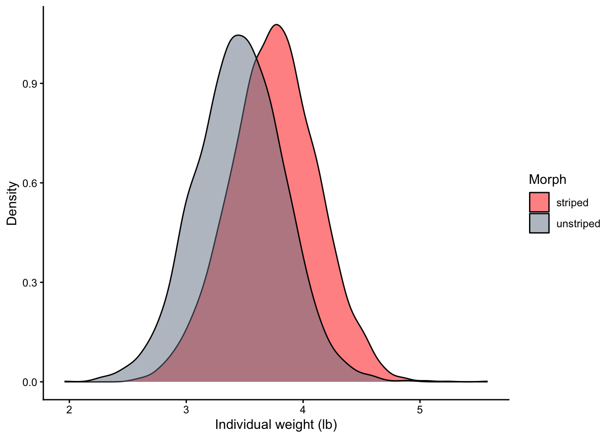

Chapter 9 The linear model
- change this chapter to use the BAC example in HW9
Over the last few chapters we have examined the process of estimating unknown quantities from samples with frequentist and Bayesian inference. Sample estimates vary in their quality, and we’ve emphasized the importance of quantifying metrics of uncertainty for our estimates, such as credible or confidence intervals. To this point the quantities we have estimated are very simple, such as a single proportion or mean characterizing a population. But what happens when life isn’t so simple? What if we’re not simply interested in the prevalence of an infection in a single city, but rather variation in the prevalence of the infection among cities? What if the variation in the prevalence among cities is affected by population density?
The same reasoning applies to population means for continuous variables. Suppose you are a real estate broker, and you’re interested in the average price at which a home sells. It would be inadequate to estimate a single mean price for all homes, because you know home price is affected by a variety of factors, such as square footage. Thus, what you really need to do is estimate the mean home price at different levels of square footage.
In this chapter we will start developing a tool for situations like this where we want to link a mean (or a proportion) to other measurements. The tool we will use is the generalized linear model. The GLM is the powerhouse of statistical analysis. It’s flexible enough to allow us to estimate the simplest of quantities, such as a single mean or proportion, but also to link a response variable to other measurements. We can use GLMs to examine the relationship between two variables in a simple experiment, and we can use to examine the relaitonship between two variables while adjusting for other variables, often a necessity in observational designs. We can use the GLM for situations where we expect a relationship to be constant, or in situations where the relationship between variables depends on a third variable. The bottom line is that GLMs are extremely flexible, and as such, they will be the focus of the remainder of this book.
In light of the criticisms of frequentist inference with null hypothesis significance testing, all the examples in the remainder of the book will be presented initially with Bayesian estimation procedures. However, because students of statistics should know how to interpret studies using frequentist inference, each example will include a short “How a Frequentist Would Analyze It” section.
9.1 Statistical models
The rest of this book is about designing statistical models to estimate quantities of interest. A model is just a simplified representation of some phenomenon of interest. We’ve already seen models in the form of DAGs, which represent our scientific model of how variables are causally related to each other. As scientific models, DAGs are largely conceptual in nature. Science is about confronting our ideas with data, and so we need a model to help us make that link. That’s where statistical models enter the picture. Statistical models are quantitative representations of our scientific models. They can consist of an equation, or a set of equations, that describe single variables, and more often in causal inference, the relationship between variables.
Let’s develop the idea of a statistical model with an example. In this chapter we will look at the the growth of perennial ryegrass, which is native to Europe and Asia but has been cultivated and introduced around the world. Ryegrass can be considered an invasive species in that it can outcompete native plants. We’re going to look at the growth rate of ryegrass as measured in the lab, using data from (Inderjit et al. 2002).
Let’s go ahead and load the data. This is actually only a subset of N = 9 observations. You’ll see there are two variables in the data frame, conc and rootl, and for now we’ll focus our attention on rootl, which is the root length of ryegrass measured in cm.
## rootl conc
## 1 8.355556 0.94
## 2 6.914286 0.94
## 3 7.750000 0.94
## 4 6.871429 1.88
## 5 6.450000 1.88
## 6 5.922222 1.88
## 7 1.925000 3.75
## 8 2.885714 3.75
## 9 4.233333 3.75ggplot(data = d, aes(x = rootl)) +
geom_histogram(binwidth = 0.5, fill = "skyblue", color = "black") +
labs(x = "Root length (cm)", y = "Frequency") +
theme_minimal()
(#fig:c09_chunk01)TODO: caption.
The histogram doesn’t tell us much with only nine observations, but we do know root length is a continuous random variable. Root length in this dataset is being used to measure the growth of ryegrass in the lab. Growth rates and plant size typically exhibit bell-shaped, approximately normal distributions. Indeed, any attribute that is influenced by many processes with non-trivial effects (e.g., many genes and environmental factors) tends to exhibit an approximately normal distribution. So we will generate a simple statistical model that describes root length with a normal distribution.
We will follow the approach outlined in McElreath (2020) to define statistical models, which involves:
- Identify the observed variables. These are the data we collect from samples.
- Identify the unobserved parameters. These are the unknown quantities we wish to estimate with the data.
- Define how the observed data are generated. This can be a simple as defining a single variable as a random variable from a particular probaiblity distribution, or we can define variables in terms of other variables.
- For Bayesian analysis, define our prior distributions for each unknown parameter.
Let’s apply this to our ryegrass example. To start, we are simply describing the observed root length data as a random variable drawn from a normal distribution. The normal distribution has two parameters that we need to estimate: the mean and the standard deviation. Thus, in our model, we need a line to describe root length as a random variable, and two lines to define the prior distributions for each of the unknown parameters. Here’s the model we will use:
\[ \begin{array}{l} r_i \sim \mathrm{Normal}(\mu, \sigma) \\ \mu \sim \mathrm{Normal}(5, 2) \\ \sigma \sim \mathrm{Uniform}(0, 5) \end{array} \]
Let’s walk through each line of our statistical model. First we have \(r_i \sim \mathrm{Normal}(\mu, \sigma)\). Here we are defining the observed values of root length for each individual i (\(r_i\)) as a random variable following a normal distribution with parameters mean = \(\mu\) and standard deviation = \(\sigma\). Remember the tilde symbol (~) defines a relationship as stochastic, which means that the observed values \(r_i\) are probabalistic rather than being determiend with certainty. The normal distribution with its parameters defines the probability of drawing particulare values of root length. We don’t know what those parameter values are, so we will have to estimate them. In the context of Bayesian estimation, this line represents the likelihood.
The second and third lines are prior distributions. In Bayesian estimation, every parameter in the statistical model requires a prior. Even though we might be more interested in the mean root length than its variation, we’re assuming root length has a normal distribution, and the normal distibution has two parameters (mean and standard deviation). When we assume a variable is drawn from a particular probability distribution, we have to estimate the parmaeters for that probability distribution whether we want them or not. That’s why it’s useful to differentiate between types of parameters, the estimands being the parameters that we are most interested in.
Now consider what each prior distribution says. The first prior is for the mean root length: \(\mu \sim \mathrm{Normal}(5, 2)\). This defines the probability of the mean taking on different values with a normal distribution, specifically a normal distribution with a mean of 5 and standard deviation of 2. Effetively what this means is that - prior to analyzing the data - I think the most plausible values for the mean root lenght are around 5 cm. The mean could be greater or less than 5 cm, but 5 cm is the most likely value (as the mean of the normal distribution). Of course we can say exatly how likely the other values are. Following hte empricail rule, I’m assuming that there’s a 95% chance that the mean root length is between 1 and 9 cm. Values outside those bounds collectively have only a 5% probability.
How did I know to use those particular values for the normal prior (mean = 5, standard deviation = 2). This is where domain knowledge is helpful. Based on prior knowledge from people who have worked with ryegrass in this kind of experimental setting (growing plants in petri dishes), we know the mean root lenghts are going to be relatively small, likely somewhere in the range of 0-10 cm. The values at the extremes of that range are much less likely than values in the middle - indeed, it’s not even possible to have a root length of 0 cm. The normal distribution captures that prior knowledge nicely (albeit imperfectly, as every model is imperfect).

(#fig:c09_chunk02, )TODO: caption.
Remember that Bayesian inference combines the prior and likelihood to quantify the posterior distributions for each a parameter. We’re going to use brms to do just that, but before doing so, it can be very useful to do that’s called a prior predictive simulation. The idea is that we can use the prior distributions to simulate data to get a senes for what the prior distributions imply about what the data should look like. For the ryegrass example, the idea is to get a sense for the different possible combinations of the mean and standard deviation of root length, and the resulting distribution of root length implied by the priors:
#from https://bookdown.org/content/4857/geocentric-models.html#a-language-for-describing-models
n <- 10000
set.seed(123)
#randomly draw means from the prior
mu.sim <- rnorm(n, mean = 5, sd = 2)
#randomly draw SDs from the prior
sigma.sim <- runif(n, min = 0, max = 5)
#randomly draw values of root length from the combined means and SDs
r.sim <- rnorm(n, mean = mu.sim, sd = sigma.sim)
#plot the simulated root lenth distribution
df <- data.frame(r.sim = r.sim)
ggplot(df, aes(x = r.sim)) +
geom_density(fill = "lightblue", color = "darkblue") +
labs(title = "Implied distribution of root length from priors",
x = "Root length (cm)",
y = "Density") +
theme_minimal()
(#fig:c09_chunk03)TODO: caption.
We can see the distribution of root length implied by the priors has a mean right around 5 cm as expected, so that’s good. But what’s not good is that the variation around that mean is unrealistic. The priors are implying a non-trivial chance of seeing root lengths that are 0 or negative! Good thing we did this prior predictive simulation. This is exactly why you’d do such a thing; to see if the priors you assumed are realistic. Clearly the priors we’re using can be improved. Let’s tighten things up with a revised statsitical model:
\[ \begin{array}{l} r_i \sim \mathrm{Normal}(\mu, \sigma) \\ \mu \sim \mathrm{Normal}(5, 1) \\ \sigma \sim \mathrm{Uniform}(0, 3) \end{array} \]
Do you see what changed? The normal prior for the mean now implies a 95% chance of the mean being 3-7 cm, and we’ve reduced the upper bound of the standard deviation from 5 cm to 3 cm. Let’s see if that implies a more realistic distribution of heights:
#from https://bookdown.org/content/4857/geocentric-models.html#a-language-for-describing-models
n <- 10000
set.seed(123)
#randomly draw means from the prior
mu.sim <- rnorm(n, mean = 5, sd = 1)
#randomly draw SDs from the prior
sigma.sim <- runif(n, min = 0, max = 3)
#randomly draw values of root length from the combined means and SDs
r.sim <- rnorm(n, mean = mu.sim, sd = sigma.sim)
#plot the simulated root lenth distribution
df <- data.frame(r.sim = r.sim)
ggplot(df, aes(x = r.sim)) +
geom_density(fill = "lightblue", color = "darkblue") +
labs(title = "Implied distribution of root length from priors",
x = "Root length (cm)",
y = "Density") +
theme_minimal()
(#fig:c09_chunk04)TODO: caption.
There are still some negative values implied by the priors, but now they are quite rare. One of the reasons we continue to see some very small proportion of negative root lengths is that we’re assuming a normal distribution for root length, and the normal distribution can have negative values. As we’ll see later in the book, there are other probability distributions that may be more effective. In this case, it would be helpful to use a probability distribution that has a bell-shaped curve, but that does not allow negative values. Stay tuned. For now, this prior distribution will suffice. Let’s proceed with estimation in brms:
#specify model formula
m1.formula <- bf(rootl ~ 1,
family = gaussian) #defines root length as a normal random var
#specify priors
m1.prior <- c(prior(normal(5, 1), class = Intercept),
prior(uniform(0, 3), class = sigma, lb=0, ub=3))
#compute the posterior
m1 <- brm(data = d,
formula = m1.formula,
prior = m1.prior,
refresh = 0,
seed=123)
print(m1)## Family: gaussian
## Links: mu = identity
## Formula: rootl ~ 1
## Data: d (Number of observations: 9)
## Draws: 4 chains, each with iter = 2000; warmup = 1000; thin = 1;
## total post-warmup draws = 4000
##
## Regression Coefficients:
## Estimate Est.Error l-95% CI u-95% CI Rhat Bulk_ESS Tail_ESS
## Intercept 5.45 0.59 4.28 6.63 1.00 2069 1990
##
## Further Distributional Parameters:
## Estimate Est.Error l-95% CI u-95% CI Rhat Bulk_ESS Tail_ESS
## sigma 2.25 0.40 1.51 2.94 1.00 1568 1287
##
## Draws were sampled using sampling(NUTS). For each parameter, Bulk_ESS
## and Tail_ESS are effective sample size measures, and Rhat is the potential
## scale reduction factor on split chains (at convergence, Rhat = 1).Let’s walk through this. We’ve defined the likelihood with the bf function, where the formula rootl ~ 1 tells brms that we want to fit a model with only an intercept, which in this case is a fancy way of saying we want the overall meam (this will make more sense later this chapter!). We’re assuming rootl is a normal random variable with family = gaussian. We then define our priors. In brms, each parameter getting a prior needs a distribution for the prior (normal for the mean, uniform for the stanard deviation in this case), and we specify the type of parameter with the class argument, here being an Intercept for the mean and sigma for the standard deviation. After fitting this model, we see the mean of the posterior distribution for root length is 5.45, and the 95% credible interval is 4.28-6.63. In other words, there’s a 95% probability that the mean root length is between 4.28 and 6.63. We can execute the plot function on our model object to see a graph of the posterior distributions and a plot that helps us diagnose whether the model is converged:

(#fig:c09_chunk06)TODO: caption.
The left panel shows the posterior distributions for the mean (b_Intercept) and standard deviation (sigma) parameters, and the right side of the panel shows trace plots for each panel. Trace plots allow you to view the value of each parameter for each iteration of the model in each chain. What we’re looking for here is relative consistency in the parameter values among the chains, that is convergence of the parameter values. These trace plots indicate solid convergence because the values for each chain overlap extensively and hover around a common value. Numerically, the Rhat values near 1 also indicate convergence.
Remember that we can also draw samples from the posterior distribution to compute any quantity of interest. For example, suppose we want to estimate the probability that the mean root length is greater than 5 cm. We just need to extract the samples from the posterior and find the proportion of values greater than 5 for the mean:
## b_Intercept sigma Intercept lprior lp__ .chain .iteration .draw
## 1 5.051680 2.925563 5.051680 -2.018886 -25.07558 1 1 1
## 2 4.882915 2.430660 4.882915 -2.024405 -22.87511 1 2 2
## 3 5.939409 1.763796 5.939409 -2.458796 -22.51164 1 3 3
## 4 5.695199 2.873104 5.695199 -2.259202 -24.50022 1 4 4
## 5 6.694626 2.061946 6.694626 -3.453430 -24.31155 1 5 5
## 6 6.645777 2.094947 6.645777 -3.371841 -24.11954 1 6 6## [1] 0.77825We see there’s a 78% chance that the mean root length is >5 cm.
9.2 Linear model
9.2.1 Basic structure of the linear model
As it turns out, the researchers who generated the data we just analyzed were not simply interested in describing the mean growth rate of ryegrass. Because ryegrass can be invasive, they were interested in understanding the effect of a new herbicide on ryegrass growth. Each petri dish with ryegrass was randomly assigned an herbicide concentration, and they measured root length as an index of plant growth. This is a simple experimental design in which all other resource levels were controlled (e.g., water, light, nutrients). Because there were no concerns about post-treatment bias (e.g., non-random dropout), we can represent the scientific model with a simple DAG:
Figure 9.1: Initial DAG for the causal effect of greenspace on mental health.
Recall that our DAG is a scientific model of factors affecting root length. Like any model, it’s a simplified representation of the system in that we are proposing the only non-trivial cause of root length variation is herbicide concentration. In reality we know there are plenty of other factors that affect plant growth - water, light, nutrients, etc. Those factors were controlled in this experiment, such that the different petri dishes were assigned identical levels of resources regardless of herbicide concentration. Because of measurement error, the resource levels won’t be perfectly identical. Some petri dishes will inevitably receive a few microliters more or less of water, for example. That variation may well affect root length, but because the impact is expected to be so miniscule, we leave causes like that out of the DAG. Again, models are simplified representations of reality.
Given our scientific model, how should we analyze the data? We need a statistical model that captures the nature of the relationship between root length and herbicide concentration. As we saw in Chapter 3, when we have two variables that are quantitative, we can use a scatterplot to visualize the association between those variables. Let’s start there:
ggplot(d, aes(x = conc, y = rootl)) +
geom_point() +
labs(,
x = "Herbicide concentration (mM)",
y = "Root Length (cm)"
) +
scale_y_continuous(limits = c(0, 10)) +
theme_classic()(#fig:c09_chunk08)TODO: caption.
We can see there were three levels of herbicide concentration assigned to three replicates for nine total observations. Visually it looks like there is a negative relationship between root length and herbicide concentration, root length decreases as herbicide concentration increases. We need a statistical model to estimate that association. Linear models are extremely useful for this task.
In our initial statistical model, we assumed that the root length values were drawn from a common normal distribution with a single mean and standard deviation. The scatterplot above suggests that’s not a good assumption. It looks like the average root length is high when little herbicide is applied, whereas average root length is high when a lot of herbicide is applied. We need a statistical model that allows the root length values to be drawn from distributions that have different means, where the mean root length depends on the herbicide concentration. Let’s revise the statistical model to do just that:
\[ \begin{array}{l} r_i \sim \mathrm{Normal}(\mu_i, \sigma) \\ \mu_i = \alpha + \beta x_i \\ \alpha \sim \mathrm{Normal}(5, 2) \\ \beta \sim \mathrm{Normal}(0, 1) \\ \sigma \sim \mathrm{Uniform}(0, 3) \end{array} \]
Again let’s walk through the components:
Likelihood (\(r_i \sim \mathrm{Normal}(\mu_i, \sigma)\): Remember the likelihood is simply the probability of the data given the parameter values. How likely are the observed root length values given the mean and standard deviation for the ryegrass distribution? But there’s one big change here. Did you notice the mean parameter now has a subscript (i)? Rather than assuming we have a single normal distribution that describes all the root length values, we’re now saying that the observed root length for individual i is drawn from a unique normal distribution with its own mean.
Linear model (\(\mu_i = \alpha + \beta x_i\)): Our first linear model! This model defines how the unique mean for each individual i is determined. The model says the mean root length for each individual i is a linear function of two parameters: an intercept (\(\alpha\)) and a slope (\(\beta\)). You might remember from basic algebra that a line is defined by a simple equation \(y = mx + b\). That’s exactly what we have here, just with different labels for the parameters. What is each component of the linear model saying? The slope (\(\beta\)) represents the expected change in the mean root length (\(\mu_i\)) for each 1-unit change in \(x_i\). The value \(x_i\) here represents the herbicide concentration that each individual i receives. Thus, the slope represents the expected change in the mean root length when the herbicide concentration increases by 1 mM. The intercept (\(\alpha\)) represents the expected mean root length when the herbicide concentration is 0. That should make sense. When \(x_i=0\), the slope term in the linear model simply drops out, leaving just the intercept. Together, the intercept and slope determine the mean root length for the distributions from which each observed root length i is drawn.
Priors: Remember that each parameter in a statistical model must have a prior distribution, reflecting our belief about the possible values of those parameters prior to analyzing the data. We may not be interested in all the parameters in the model. If our research question is whether the herbicide affects root length, the estimand is the slope (\(\beta\)), but we still need to estimate the other parameters to estimate the slope. Let’s walk through the prior for each parameter:
Intercept (\(\alpha\)): Here we are specifying a normal prior for the intercept with a mean of 5 and standard deviation of 2. That reflects our prior belief that there’s a 95% probability the mean root length is between 1 and 10 cm when there’s no herbicide applied. In this case we increased the standard deviation of the prior back from 1 to 2 to allow for a wider prior distribution given that we are no longer estimating the grand mean, but the mean when no herbicide is applied.
Slope (\(\beta\)): What is the expected change in mean root length with a 1 mM increase in herbicide concentration? Our normal prior with mean = 0 and standard deviation = 1 implies that the most likely value of the slope is 0, and there’s a 95% chance that the change in root length is between -2 and 2 cm as herbicide concentration increases by 1 mM. Biologically, the researchers very likely expect the root length will decrease as herbicide concentration increases. If much of literature supports such a negative effect, then it may be wise to use a prior that has more probability weighted towards negative effects. On the other hand, this is a new herbicide, and there’s a question about whether it works, so it’s possible that there’s no effect. Given that possibility, we choose to center the prior around 0. Even if we center the prior for the slope around 0, we would still want to use an appropriate standard deviation to limit the range of slopes to values we think are realistic. For example, it wouldn’t make sense to allow for a slope that allows a 100-cm change in root length per one unit increase in mM, when the range in root length values is 0-20 cm. So we restrict the variance in the prior distribution to a range of effect we think is plausible.
Standard deviation (\(\sigma\)). The standard deviation represents the expected variation in root length values around the expected mean. Any deviation in root length from the expected mean predicted by herbicide concentration represents variation that can’t be explained by herbicide concentration. For example, imagine the expected mean root length is 4 cm when the herbicide concentration is 1 mM. Not every plant with 1 mM herbicide applied will have exactly 4 cm root length. There will be deviations around the expected mean of 4 cm. Those deviations are called residual errors (or just “residuals”). Residual variation is always expected in systems that have multiple causes. Some of the variation around the expected mean based on herbicide concentration could be due to minor variation in water, light availability, or other resources. Some of the residual variation may simply be measurement error, and some may simply be random, not having obvious causes). The standard deviation parameter specifies the expected magnitude of the variation in observed root length round the expected mean based on herbicide concentration. Because there’s no i subscript on teh standard deviation, we’re assuming a common magnitude of residual error no matter what the mean root length may be. In this case, we’ve retained the same uniform prior distribution that we used in our more simple analysis that assumed a common normal distribution for all values of root length.
9.2.2 Fitting the linear model in brms
Let’s go ahead and use a prior predictive simulation to see what the priors imply about the relationship between root length and herbicide concentration. Here all we do is simulate values of the intercept and slope from the priors, then plot them. I’ve limited the number of simulations to N = 100 to ensure that we can visualize the lines in the resulting graph.
n <- 100
set.seed(123)
#intercept
alpha.sim <- rnorm(n, mean = 5, sd = 2)
#slope
beta.sim <- rnorm(n, mean = 0, sd = 1)
#values of x (herbicide concentration)
x_vals <- seq(0, 4, length.out = 100)
# Create a data frame with all lines
lines_df <- expand.grid(x = x_vals, id = 1:n) %>%
mutate(y = alpha.sim[id] + beta.sim[id] * x)
# Plot using ggplot
ggplot(lines_df, aes(x = x, y = y, group = id)) +
geom_line(alpha = 0.3, color = "blue") + # Adjust transparency and color
theme_minimal() +
labs(x = "Herbicide concentration (mM)",
y = "Root length (cm)") +
theme_classic()
(#fig:c09_chunk09)TODO: caption.
The graph of the prior predictive simulations shows the priors allow for both positive and negative relationships between root length and herbicide concentration. The priors also allow for a range in the expected rooth length when the herbicide concentration is 0 (the intercept). One thing I don’t like about these priors is that in some simulations they allow for relationships with negative expected values of root length, which of course is not possible. But the vast majority of the simulations appear realistic, and for our purposes this is sufficient to combine with the data to estimate the posterior.
To estimate the posterior in brms, we need to use the formula to specify the linear model. The formula we’ll use here is rootl ~ 1 + conc, where 1 represents the intercept, and conc represents the slope for the effect of herbicide concentration. We use the + operator to add the slope for conc to the model. Then we just need to make sure each parameter has a prior. Slope parameters are denoted class = b when defining priors in brms. Here’s the code to estimate the posterior:
#specify model formula
m2.formula <- bf(rootl ~ 1 + conc,
family = gaussian) #defines root length as a normal random var
#specify priors
m2.prior <- c(prior(normal(5, 2), class = Intercept),
prior(normal(0, 1), class = b),
prior(uniform(0, 3), class = sigma, lb=0, ub=3))
#compute the posterior
m2 <- brm(data = d,
formula = m2.formula,
prior = m2.prior,
refresh = 0,
seed=123)
print(m2)## Family: gaussian
## Links: mu = identity
## Formula: rootl ~ 1 + conc
## Data: d (Number of observations: 9)
## Draws: 4 chains, each with iter = 2000; warmup = 1000; thin = 1;
## total post-warmup draws = 4000
##
## Regression Coefficients:
## Estimate Est.Error l-95% CI u-95% CI Rhat Bulk_ESS Tail_ESS
## Intercept 9.05 0.74 7.32 10.36 1.00 2046 1725
## conc -1.54 0.30 -2.06 -0.86 1.00 2056 1547
##
## Further Distributional Parameters:
## Estimate Est.Error l-95% CI u-95% CI Rhat Bulk_ESS Tail_ESS
## sigma 1.00 0.36 0.55 1.93 1.00 1615 1636
##
## Draws were sampled using sampling(NUTS). For each parameter, Bulk_ESS
## and Tail_ESS are effective sample size measures, and Rhat is the potential
## scale reduction factor on split chains (at convergence, Rhat = 1).How do we interpret the output? Remember that the summary for brms models shows the mean (Estimate), standard deviation (Est.Error) and 95% credible interval (l-95% CI and u-95% CI) for each parameter. We’re also given metrics to evaluate whether the parameters have converged to consistent values, an Rhat near 1 implying convergence. Based on the summary output, we can see the mean of the posterior for the intercept is 9.05, implying the most likely value of root length is 9.05 cm when no herbicide is applied. The line for conc supplies summary statistics for the slope for the effect of herbicide concentration on root length. We see the most likely value is -1.54, implying that for every one unit increase in herbicide concentration, root length declines by 1.54 cm on average. Notably the 95% credible interval is (-2.06, -0.86), suggesting the posterior distribution for the slope is broadly negative. We can confirm as much by plotting the posterior distributions:
(#fig:c09_chunk11)TODO: caption.
Indeed, we see a posterior distribution that is entirely negative for the slope. This is strong evidence that the herbicide has a negative effect on root length, and that the suppression of plant growth increases with increasing herbicide concentration. We can also see from the traceplots that there is excellent convergence of the three parameters in our model (the third being the residual error).
Plots of the posterior distributions and tables summarizing those posterior distributions are helpful for summarizing the output for simple models like ours. But usually it’s even more helpful to visualize the output of our model graphically. Our primary interest is in the relationship between root length and herbicide concentration, so we should make a plot that shows what the posterior distribution implies about that relationship. Lets re-create our scatterplot for root length and herbicide concentration, but now we’ll add a line to the graph representing the association between root length and herbicide based on the posterior means. To do so, we’re going to first use the fitted function to predict the expected values of root length for different values of herbicide concentration. Let’s start with that:
#values of herbicide concentration for which to predict root length
x <- seq(min(d$conc), max(d$conc), length.out=100)
#predict values of root length for each value of herbicide
y <- fitted(m2, newdata=data.frame(conc = x))
fit <- cbind.data.frame(conc = x, y)
head(fit)## conc Estimate Est.Error Q2.5 Q97.5
## 1 0.9400000 7.598360 0.5021902 6.480100 8.530201
## 2 0.9683838 7.554646 0.4959052 6.456589 8.478159
## 3 0.9967677 7.510932 0.4896868 6.433725 8.428845
## 4 1.0251515 7.467218 0.4835377 6.410807 8.375627
## 5 1.0535354 7.423504 0.4774606 6.383898 8.315237
## 6 1.0819192 7.379791 0.4714582 6.354950 8.265914What is the fitted function doing? It’s taking each value of x and plugging it into the linear model formula to compute the expected mean root length. For example, when herbicide concentration is \(x = 0.94\), the expected mean root length is \(y = 9.05 - 1.54*0.94 = 7.6\) based on the posterior mean for the intercept (9.05) and slope (-1.54). But remember with Bayesian inference the estimate is not a single point, but an entire distribution. The fitted function computes the expected mean root length from the values of \(x\) across every sample for the posterior distribution, and it provides summary statistics of the variation around the posterior mean, namely the standard deviation (Est.Error) and a 95% credible interval (Q2.5 and Q97.5).
Now let’s make our scatterplot and add the posterior mean predictions. All we do here is take the code for our original scatterplot, and we add the function geom_line to add the prediction line:
ggplot(d, aes(x = conc, y = rootl)) +
geom_point() +
geom_line(data = fit, aes(x = conc, y = Estimate)) +
labs(,
x = "Herbicide concentration (mM)",
y = "Root Length (cm)"
) +
scale_y_continuous(limits = c(0, 10)) +
theme_classic()
(#fig:c09_chunk13)TODO: caption.
It’s worth bearing in mind that this prediction line represents the posterior mean, so it doesn’t communicate the uncertainty about our estimate. To see what I mean, let’s add prediction lines for a selection of the posterior samples to get a sense for the variation To do so, we need to first extract the samples with as_draws_df:
## # A draws_df: 6 iterations, 1 chains, and 6 variables
## b_Intercept b_conc sigma Intercept lprior lp__
## 1 9.6 -1.8 0.56 5.6 -5.4 -17
## 2 9.4 -1.5 1.18 6.2 -4.9 -17
## 3 8.2 -1.3 1.30 5.4 -4.5 -18
## 4 7.8 -1.1 0.88 5.4 -4.3 -18
## 5 9.8 -1.9 0.81 5.7 -5.4 -16
## 6 9.7 -1.8 1.02 5.8 -5.3 -16
## # ... hidden reserved variables {'.chain', '.iteration', '.draw'}ggplot(d, aes(x = conc, y = rootl)) +
geom_abline(data = m2.post,
aes(intercept = b_Intercept, slope = b_conc),
linewidth=0.1, alpha=0.1) +
geom_line(data = fit, aes(x = x, y = Estimate), color="firebrick") +
geom_point(color="firebrick") +
labs(,
x = "Herbicide concentration (mM)",
y = "Root Length (cm)"
) +
scale_y_continuous(limits = c(0, 10)) +
theme_classic()(#fig:c09_chunk15)TODO: caption.
This plot shows the prediction line for every single posterior sample from our model. I leveraged the geom_abline function to make this easy, as it automatically adds a line to the graph based on a supplied intercept and slope. I made the line width small and the lines transparent (alpha = 0.3) so that you could see the the points, the posterior mean prediction, and where most of the lines are concentrated. What we see is that the posterior mean prediction is in the center of the cluster, and the variation around it represents uncertainty. The more variation in the predictions from individual samples, the more uncertainty we have about the estimated relationship. Including predictions from each draw of the posterior can effective for displaying uncertainty, but an alternative would be to plot a credible interval at a particular level of probability around the posterior mean prediciton. Here’s the same plot but with a 95% credible interval for the prediction line:
ggplot(d, aes(x = conc, y = rootl)) +
geom_smooth(data = fit,
aes(x = conc, y = Estimate, ymin = Q2.5, ymax = Q97.5),
stat = "identity",
fill = "grey70", color = "black", alpha = 1, linewidth = 1/2) +
geom_point(color="firebrick") +
labs(,
x = "Herbicide concentration (mM)",
y = "Root Length (cm)"
) +
scale_y_continuous(limits = c(0, 10)) +
theme_classic()(#fig:c09_chunk16)TODO: caption.
Here we’re drawing on the predictions we made with the fitted function, which computed the 95% credible interval. The geom_smooth function adds the prediction line and a shaded area for the 95% credible interval.
It’s important to note that the variation in the prediction lines and the credible interval we just plotted both represent uncertainty about the expected mean value of the response variable at each value of the explanatory variable. In the context of our statistical model, these represent uncertainty about the values of \(\mu_i\). What if we wanted to represent uncertainty about the observed values of the response variable? We can clearly see that not all the points are exactly the same as the mean root length at a given herbicide concentration. There is residual variation in root length unexplained by herbicide concentration. How do we represent uncertainty about the individual values of root length?
To quantify uncertainty about the individual values of root length, we need to consider the standard deviation parameter, which represents the variation in root length values around the expected mean. In brms, the fitted function we used before only makes predictions about the mean of the response variable, and it quantifies uncertainty only about that mean. Thepredict function allows us to quantify uncertainty about the individual values of the response variable, collectively considering the mean and the standard deviation. It works much like the fitted function:
## conc Estimate Est.Error Q2.5 Q97.5
## 1 0.9400000 7.585479 1.133356 5.198950 9.701865
## 2 0.9683838 7.526634 1.166065 5.125505 9.812272
## 3 0.9967677 7.506209 1.185859 5.172469 9.809129
## 4 1.0251515 7.450557 1.161147 5.058929 9.727346
## 5 1.0535354 7.448916 1.154815 5.082123 9.682222
## 6 1.0819192 7.378764 1.155527 5.023748 9.561848Notice that although the estimated values are similar to the estimates from fitted, the credible intervals are much wider here because they consider the uncertainty in the mean and the individual observaitons around the mean. We call this interval the \[prediction interval\]. Let’s go ahead and plot it:
ggplot(d, aes(x = conc, y = rootl)) +
geom_ribbon(data = pred,
aes(x = conc, y = Estimate, ymin = Q2.5, ymax = Q97.5),
fill = "grey83") +
geom_smooth(data = fit,
aes(x = conc, y = Estimate, ymin = Q2.5, ymax = Q97.5),
stat = "identity",
fill = "grey70", color = "black", alpha = 0.3, linewidth = 1/2) +
geom_point(color="firebrick") +
labs(,
x = "Herbicide concentration (mM)",
y = "Root Length (cm)"
) +
scale_y_continuous(limits = c(0, 10)) +
theme_classic()
(#fig:c09_chunk18)TODO: caption.
Here we’ve used the geom_ribbon function to add the prediction interval to the last version of our figure. This figure now shows the observed data (red points), the posterior mean prediction line (solid black line), uncertainty in the predicted mean (95% credible interval in dark gray shading), and uncertainty in the individual observations (95% prediction interval in light gray shading). Whereas the credible interval shows uncertainty about the expected mean, the 95% prediction interval in light gray shows where we would expect 95% of the root length values to occur at any particular value of herbicide concentration.
9.2.3 How a frequentist might do it
Let’s look at how we would fit the same model with frequentist inference. When we fit a linear model with frequentist inference, we use the data to compute point estimates for the intercept and slope. Remember the idea in frequentist inference is that if we were to repeat sampling and estimate the intercept and slope over and over again, we would see variation in the estimates due to sampling error. So in addition to computing point estimates for the linear model parmaeters, we’ll also compute the standard error and confidence intervals for those parameters as indices of uncertainty.
In R we can fit a linear model with the lm function, using a formula with the ~ operator to specify the relationship of the response variable to the explanatory variable. Just like in brms, the response variable is specified first on the left of the tilde, and the explanatory variable on the right of the tilde. I’ve included a 1 on the right side of the formula to specify an intercept as I did in brms, but note that the lm includes an intercept by default, so rootl ~ conc would produce the same output.
##
## Call:
## lm(formula = rootl ~ 1 + conc, data = d)
##
## Residuals:
## Min 1Q Median 3Q Max
## -1.15416 -0.29959 -0.05154 0.55401 1.15418
##
## Coefficients:
## Estimate Std. Error t value Pr(>|t|)
## (Intercept) 9.3813 0.5592 16.776 6.54e-07 ***
## conc -1.6806 0.2253 -7.459 0.000142 ***
## ---
## Signif. codes: 0 '***' 0.001 '**' 0.01 '*' 0.05 '.' 0.1 ' ' 1
##
## Residual standard error: 0.7894 on 7 degrees of freedom
## Multiple R-squared: 0.8882, Adjusted R-squared: 0.8723
## F-statistic: 55.64 on 1 and 7 DF, p-value: 0.0001421The key part of the model is under the heading Coefficients, where we see point estimates (Estimate) and the standard error (Std. Error) for the intercept and slope. The point estimate for the intercept is 9.38, whereas the slope estimate is -1.68. In addition to providing the point estimate and the standard error, the lm function computes a null hypothesis test for the intercept and slope. For both the intercept and slope, the null hypothesis is that the parameter value is 0. Often that doesn’t make too much sense for the intercept. After all, it woudln’t make sense for root length to be 0 when herbicide is applied. The slope is the main parameter where the null hypothesis is of interest. A slope of 0 implies no relationship between root length and herbicide concentration.
The particular test statistics for testing the null hypothesis in this case is the t value, which we have seen before. Effectively this is a “t-test” for the null hypothesis that the slope is 0, where \(t = \frac{b - \beta}{SE_b}\), with \(\beta\) being the null hypothesized value for the slope, and \(b\) being the estimated slope. Here R reports a t value of -7.46, which we could just recreate as \(t = \frac{b - \beta}{SE_b} = \frac{-1.6806 - 0}{0.2253}=-7.459.\) The degrees of freedom for a linear model like this is n-2, and we see the P-value reported is 0.00142. With a significance value of 0.05, we would reject the null hypothesis and conclude there’s a significant negative relationship between root length and herbicide concentration.
In addition to the standard error and null hypothesis test, we can obtain confidence intervals for the regression coefficients:
## 2.5 % 97.5 %
## (Intercept) 8.058986 10.703562
## conc -2.213322 -1.147807We can also create a scatterplot with the best-fit line and a shaded area corresponding to the confidence interval for the predicted mean root length, as well as a prediction interval for the distribution of observed values around the expected mean.
#values of herbicide concentration for which to predict root length
x <- seq(min(d$conc), max(d$conc), length.out=100)
# Get confidence and prediction intervals
preds <- predict(m.f, newdata=data.frame(conc=x),
interval = "confidence", level = 0.95)
preds_pi <- predict(m.f, newdata=data.frame(conc=x),
interval = "prediction", level = 0.95)
# Combine into a data frame for plotting
pred_df <- cbind(conc=x,
fit = preds[, "fit"],
lwr_ci = preds[, "lwr"],
upr_ci = preds[, "upr"],
lwr_pi = preds_pi[, "lwr"],
upr_pi = preds_pi[, "upr"])
#plot
ggplot(d, aes(x = conc, y = rootl)) +
geom_ribbon(data = pred_df,
aes(x = conc, y = fit, ymin = lwr_ci, ymax = upr_ci),
fill = "grey83") +
geom_smooth(data = pred_df,
aes(x = conc, y = fit, ymin = lwr_pi, ymax = upr_pi),
stat = "identity",
fill = "grey70", color = "black", alpha = 0.3, linewidth = 1/2) +
geom_point(color="firebrick") +
labs(,
x = "Herbicide concentration (mM)",
y = "Root Length (cm)"
) +
scale_y_continuous(limits = c(0, 10)) +
theme_classic()
(#fig:c09_chunk21)TODO: caption.
Note that we use the predict function here to compute the confidence and prediction intervals, specifying each with the interval argument. At a surface level the output is similar to the Bayesian output, mainly because this is a very simple model with only weakly informative prior distribution. But remember that the interpretation is very different from the Bayesian ouptut. We can’t interpret the frequentist output as the probability that the parmater value takes on a particular value, or the probability that the parameter value is in some interval. Indeed, the interpretation of the P-value is that it would be very unlikely (P = 0.000142) to get an estimated slope of -1.68, or more extreme slopes, assuming the true slope is exactly 0. Setting aside teh value of using prior information in the estimation process, even with an uninformative prior the Bayesian output can be interpreted more intuitively as the probability of the hypothessis (any particular value of the slope) given the data we observed.
I’d liek to point out two other pieces of the model output that are commonly referred to in the literature. First, the lm computes an R-squared value. The \(R^2\) value is called the coefficient of determination, and it measures the proportion of the variation in the response variable “explained” by the explanatory variable. In other words, of all the variation observed among root length, what proportion of that variation is explained by herbicide concentration? The adjusted \(R^2\) (usually preferred) is 0.8723, indicating that 87.23% of the variation in root length is explained by herbicide concentration. Essentially the \(R^2\) value reflects how much scatter there is in the observed values of the response variable around the prediction line (i.e., the expected mean root length for each value of herbicide concentration. The less scatter, the higher the \(R^2\). Indeed, if all the points fell on the line, \(R^2\) would be 1. Essentially \(R^2\) gives us a quantitative estimate of the predictive ability of the explanatory variable.
Second, the output reports some basic information about the residuals. Indeed, that scatter around the prediction line is residual variation. The residuals simply measure how far each observed data point is away from the expected mean for its herbicide concentration. When the herbicide concentration is 1.88 mM, the expected mean root length is \(\mu_i = 9.3813 -1.6806 \cdot 1.88 = 6.22\). Let’s see the root lengths we observed at 1.88 mM herbicide concetration:
## rootl conc
## 4 6.871429 1.88
## 5 6.450000 1.88
## 6 5.922222 1.88None of them are exactly 6.22. The unexplained, residual variation is just the difference between each observed value and the expected mean: \(e_i = r_i - \hat{\mu_i}\), where \(e_i\) is the residual. For the three observations where herbicide concentration is 1.88 mM, the residuals are:
\[ \begin{array}{l} e_1 = 6.78 - 6.22 = 0.56 \\ e_2 = 6.45 - 6.22 = 0.23 \\ e_3 = 5.92 - 6.22 = -0.30 \end{array} \]
Notice that the residuals are positive when the observed value is greater than the expected mean, and negative when the observed value is less than the expected mean. The linear model that we used assumes that the residuals have a normal distribution with a mean of 0 and a standard deviation of \(\sigma\). When you fit a linear model with frequentist inference with the lm function, it provides some summary statistics for the residuals. But we can easily compute and analyzed the residuals with the residuals function:
## 1 2 3 4 5 6
## 0.55401210 -0.88725775 -0.05154346 0.64961581 0.22818724 -0.29959054## [1] -2.467162e-17## [1] 0.7384323We can see the estimated mean residual is basically 0, and the estimated standard deviation is 0.74. If we had a bigger sample size, we might also generate a histogram of the residuals to evaluate whether the distribution is approximately normal, which is what the model assumes.
9.3 Linear models with categorical predictors
Linear models are flexible and can be modified to accomodate different types of data. So far we’ve looked at a simple model when we have a continuous response variable and a continuous predictor variable. In this section we look at what happens when the response is continous and the explanatory variable is categorical.
9.3.1 Binary explanatory variables
Let’s revisit the dataset on color morphology of red-backed salamanders. These salamanders have two primary color morphs, striped and unstriped, that have been shown to vary in a number of other phenotypic traits. In this section let’s examine if color morphology affects the size of adult salamanders, measured as the snout-vent-length (SVL). First we load the data:
We begin by plotting the tail autotomy data and comparing between morphs, using the
ggplot(tail, aes(x = morph, y = length.cm)) +
geom_jitter(width = 0.1, shape = 1, aes(color = morph)) +
scale_color_manual(values = c("striped" = "red", "unstriped" = "slategray")) +
labs(x = "Sex", y = "Snout-vent-length (cm)", color = "morph") +
theme_classic() +
theme(legend.position = "none")(#fig:c09_chunk25)TODO: caption.
We need to fit a model that allows us to estimate the mean SVL for each color morph and compare the mean between morphs. Here’s our statistical model:
\[ \begin{array}{l} l_i \sim \mathrm{Normal}(\mu_i, \sigma) \\ \mu_i = \alpha_{j} \\ \alpha_{j} \sim \mathrm{Normal}(3.5, 0.5) \\ \sigma \sim \mathrm{Exponential}(3) \end{array} \]
We assume the lengths (l) for each individual i follow a normal distribution with mean \(\mu_i\) and standard deviation \(\sigma\). The second line says the expected mean for each individual i is defined by the mean for its morph, \(\alpha_j\), where j represents an index for each color morph. Thus each individual i is either striped or unstriped, and we assume separate meeans for each morph. We assume a normal prior for the means of each sex with mean = 3.5 cm and standard deviation = 0.5 lb, reflecting the prior belief of a ~95% probability that the mean SVL will be between 2.5 and 4.5 for each morph. For the standard deviation parameter we assume an exponential prior. This is the first time we’ve seen an exponential distribution. The exponential distribution is handy for standard deviations because it is bounded at zero and has only positive values. The probabiity density is greatest at 0, and density declines with greater values, with the rate of decline specified by a single rate parameter (greater values indicate steeper rates of decline). The exponential function is considered a regularizing prior for standard deviations because it favors smaller values. Here we choose a an exponential prior with rate parameter 1 for the standard deviation of SVL.
A simple way to code categorical explanatory variables is by specifying a numerical index value for each category. This is simple a way of representing each category as an integer value. Let’s define the striped morph as 1 and unstriped as 2:
One way to handle categorical predictor variablesindex variable. An index variable represents each category as an integer value. We also define the index variable, morph.i as a factor variable, which is required by brms.
We begin the analysis with a prior predictive check:
set.seed(123) # for reproducibility
#draw 1000 values of the mean striped length from the prior
striped_mu <- rnorm(1000, mean = 3.5, sd = 0.5)
#draw 1000 values of the mean festriped weight from the prior
unstriped_mu <- rnorm(1000, mean = 3.5, sd = 0.5)
#draw 1000 values of the standard deviation in weight from the prior
sample_sigma <- rexp(1000, 3)
#draw values of individual weights for stripeds and festripeds
prior_striped_l <- rnorm(1000, striped_mu, sample_sigma)
prior_unstriped_l <- rnorm(1000, unstriped_mu, sample_sigma)
#combine to a dataframe
df <- data.frame(prior_striped_l = prior_striped_l,
prior_unstriped_l = prior_unstriped_l)
ggplot() +
geom_density(aes(x = df$prior_striped_l, fill = "striped"), alpha = 0.5) +
geom_density(aes(x = df$prior_unstriped_l, fill = "unstriped"), alpha = 0.5) +
scale_fill_manual(values = c("striped" = "red", "unstriped" = "slategray")) +
labs(x = "SVL (cm)", y = "Density", fill = "Morph") +
theme_minimal()
We see the priors imply no difference in the distribution of individual SVLs, but certainly they allow for it. The only issue here is that the priors imply a few negative values for SVL, which of course doesn’t make sense. However those observations are extremely rare, and we proceed to fit the model:
Let’s go ahead look at how we fit the model with brms. We already have the data organized in the dataframe tail, so we can can get right to defining our model and priors.
All we want here is the estimation of a mean for each group, so we don’t want to estimate a typical intercept. To suppress the intercept estimation in brms, we use the 0 + ... syntax. Adding 0 + morph.i syntax tells brms to compute a separate intercept for each index value of the morph.i factor variable. As such, when we define the priors for the means, we do so by specifying class = b (rather than Intercept).
#specify model formula
m2.formula <- bf(length.cm ~ 0 + morph.i,
family = gaussian)
#specify priors
m2.prior <- c(prior(normal(3.5, 0.5), class = b),
prior(exponential(3), class=sigma))
#compute the posterior
m2 <- brm(data = tail,
formula = m2.formula,
prior = m2.prior,
refresh = 0,
seed=123)
plot(m2)(#fig:c09_chunk28)TODO: caption.
We see the plot function returns posterior distributions for three parameters, including the mean for each morph and the standard deviation. The means for each morph are labeled with the appropriate index level, specifically morph.i1 for striped and morph.i2 for unstriped. The traceplots look pretty good, so we turn our attention to the model summary:
## Family: gaussian
## Links: mu = identity
## Formula: length.cm ~ 0 + morph.i
## Data: tail (Number of observations: 40)
## Draws: 4 chains, each with iter = 2000; warmup = 1000; thin = 1;
## total post-warmup draws = 4000
##
## Regression Coefficients:
## Estimate Est.Error l-95% CI u-95% CI Rhat Bulk_ESS Tail_ESS
## morph.i1 3.75 0.08 3.58 3.91 1.00 3509 2932
## morph.i2 3.46 0.08 3.29 3.62 1.00 3670 2422
##
## Further Distributional Parameters:
## Estimate Est.Error l-95% CI u-95% CI Rhat Bulk_ESS Tail_ESS
## sigma 0.37 0.04 0.30 0.47 1.00 3474 2613
##
## Draws were sampled using sampling(NUTS). For each parameter, Bulk_ESS
## and Tail_ESS are effective sample size measures, and Rhat is the potential
## scale reduction factor on split chains (at convergence, Rhat = 1).It looks like the mean SVL of the posterior for striped morph is 3.75 g, with a 95% credible interval from 3.58 to 3.91 g. In contrast, the mean of the posterior for unstriped morph is 3.46 cm, with a 95% credible interval of 3.29 to 3.62.
Is there a difference in the mean SVL between color morphs? The posterior distributions overlap somethwat, we we can see by the 95% credible intervals. But we don’t need to visually look for overlap of posterior distributions. We can use the samples of the mean SVL for each morph to derive values that allow us to make the dcomparison between morph explicit. Let’s first extract the samples and plot the posterior distributions for hte mean of each morph.
## # A draws_df: 6 iterations, 1 chains, and 5 variables
## b_morph.i1 b_morph.i2 sigma lprior lp__
## 1 3.9 3.5 0.37 -0.83 -19
## 2 3.8 3.5 0.37 -0.69 -18
## 3 3.8 3.6 0.40 -0.69 -18
## 4 3.8 3.3 0.35 -0.56 -18
## 5 3.7 3.6 0.35 -0.50 -17
## 6 3.7 3.5 0.42 -0.69 -18
## # ... hidden reserved variables {'.chain', '.iteration', '.draw'}#plot
ggplot() +
geom_density(aes(x = m2.post$b_morph.i1, fill = "striped"), alpha = 0.5) +
geom_density(aes(x = m2.post$b_morph.i2, fill = "unstriped"), alpha = 0.5) +
scale_fill_manual(values = c("striped" = "red", "unstriped" = "slategray")) +
labs(x = "Mean SVL (cm)", y = "Density", fill = "Morph") +
theme_classic()
We can see in the plot what we thought was apparent in the credibel intervals: the bulk of the posterior distribution for mean SVL for striped is greater than unstriped, but there is some overlap. If we are really interested in the difference between the mean SVL of each morph, we should quantify that difference directly from the samples and examine the posterior distribution of the difference in means. This is as simple is adding a new column to m2.post as the difference in means between the morphs, then we can summarize that posterior distribution. This is called a contrast.
#calculate the contrast as mean striped - mean unstriped
m2.post$morph.delta <- m2.post$b_morph.i1 - m2.post$b_morph.i2
#plot
ggplot(m2.post, aes(x = morph.delta)) +
geom_density(fill = "slategray", alpha = 0.5) +
labs(x = "Difference in mean SVL (cm; Stirped - Unstriped)", y = "Density") +
theme_classic()(#fig:c09_chunk31)TODO: caption.
## [1] 0.2888998## 2.5% 97.5%
## 0.06143877 0.51822613We mean of the derived posterior difference in means between morphs is 0.29, with a 95% credible interval of 0.06 to 0.52 cm. Thus, There’s a 95% probability that the mean SVL for striped morph is at least 0.06 cm greater than the unstriped morph. We could also compute the probability of the mean for each morph being greater than the other:
## [1] 0.99125## [1] 0.00875We find a 99% chance the mean SVL for striped is greater than unstriped.
In addition to examining the posterior distribution for the mean SVL, we can also examine the posterior distribution for the individual SVL values.
set.seed(123)
# Simulate one weight per posterior sample
post_s_w <- rnorm(nrow(m2.post), mean = m2.post$b_morph.i1, sd = m2.post$sigma)
post_u_w <- rnorm(nrow(m2.post), mean = m2.post$b_morph.i2, sd = m2.post$sigma)
# Create data frame for plotting
df_post <- data.frame(post_s_w = post_s_w,
post_u_w = post_u_w)
ggplot() +
geom_density(aes(x = df_post$post_s_w, fill = "striped"), alpha = 0.5) +
geom_density(aes(x = df_post$post_u_w, fill = "unstriped"), alpha = 0.5) +
scale_fill_manual(values = c("striped" = "red", "unstriped" = "slategray")) +
labs(x = "Individual weight (lb)", y = "Density", fill = "Morph") +
theme_classic()
Here the rnorm function is generating a random SVL for each color morph drawn from a distribution specified by the sampled mean and standard deviation from the posterior distributions for striped and unstriped morphs. Plotting the density of those 10,000 SVLs for each morph allows us to visualize the posterior distributions of individual SVL by morph. We can clearly see that the center of the distributions is greater for the striped than unstriped morph (as we saw previously), but that individual weights overlap quite a bit between color morphs.
We can also quantify a contrast for the individual SVLs. This gives us the posterior distribution of differences in individual SVLs between color morphs:
#posterior distribution for difference in individual weights (contrast)
df_post$l_contrast <- df_post$post_s_w - df_post$post_u_w
#plot
ggplot(df_post, aes(x = l_contrast)) +
geom_density(fill = "slategray", alpha = 0.5) +
labs(x = "Difference in individual SVL (cm; Striped - Unstriped)", y = "Density") +
theme_classic()(#fig:c09_chunk34)TODO: caption.
## [1] 0.70675## [1] 0.29325This contrast indicate that if we randomly select one striped morph and one unstriped morph from their respective SVL distributions, we can expect the striped morph to have a longer SVL than the unstriped morph 71% of the time, whereas we expect the unstriped morph to have a greater SVL 29% of the time.
9.3.1.1 How a frequentist might analyze it
Now let’s take a look at how to fit a linear model with a binary categorical explanatory variable with frequentist inference. In frequentist inference with categorical explanatory variables, a common approach is to use an indicator variable for the categorical predicator. An indicator variable is simply a binary numeric indicator of whether or not each individual in the dataset is part of the particular category of interest. So for the question about color morph, we can use an indicator variable for “striped”, where a “1” indicates the individual is striped, and a “0” indicates the individual is not striped. Because our categorical variable of color morph in this case is binary, a “0” for striped means the individual is unstriped. Let’s go ahead and create the indicator variable:
When we use an indicator variable such as male to model the effect of sex on weight, the statistical model looks a bit different than what it looked like when we used an index:
\(\hat{l}_i = \alpha + \beta X_i\)
Here we are predicting the expected SVL of individuals \(\hat{l}_i\) based on an intercept and a slope representing the effect of color morph on SVL. In this model, \(X_i\) represents the indicator variable for “striped” and takes on values of 0 or 1, and \(\beta\) represents the effect of being striped on SVL. Note than when \(X_i = 0\), \(\hat{l}_i = \alpha\). In other words, \(\alpha\) is the expected mean SVL for the unstriped morph, and \(\beta\) represents the difference in mean weight between striped and unstriped morphs. This is a little different than our Bayesian model which directly estimated the posterior distribution of average weights for striped and unstriped morphs directly.
Let’s go ahead and fit this model:
##
## Call:
## lm(formula = length.cm ~ striped, data = tail)
##
## Residuals:
## Min 1Q Median 3Q Max
## -0.6600 -0.2800 -0.0075 0.2450 0.7400
##
## Coefficients:
## Estimate Std. Error t value Pr(>|t|)
## (Intercept) 3.46000 0.08093 42.754 <2e-16 ***
## striped 0.29500 0.11445 2.578 0.014 *
## ---
## Signif. codes: 0 '***' 0.001 '**' 0.01 '*' 0.05 '.' 0.1 ' ' 1
##
## Residual standard error: 0.3619 on 38 degrees of freedom
## Multiple R-squared: 0.1488, Adjusted R-squared: 0.1264
## F-statistic: 6.644 on 1 and 38 DF, p-value: 0.01395## 2.5 % 97.5 %
## (Intercept) 3.29616982 3.6238302
## striped 0.06330913 0.5266909Let’s start by breaking down the model output. We can see the estimate for the intercept is 3.46. This represents the estimate of mean unstriped SVL. The lm function also conducts a hypothesis test of whether the intercept is significantly different from 0. We see the P-value is very low, so we would reject teh null hypothesis that the intercept is different from 0. But often this kind of hypothesis test doesnt’ make sense. Why do we care if the intercept, representing the mean weight of the unstriped morph, is different than 0?
Turning our attention to the slope for the effect of color morph, we see the estiamte is 0.295. What does this mean? It means that our best estimate of how different the mean striped morph is from the mean unstriped morph is 0.295 cm greater. In other words, the indicator parameterization of our model directly estimates the contrast between males and females, and whether that contrast is significantly different from 0. Here the P-value is 0.014, so using the typical significance value of 0.05, we would reject the null hypothesis that there is no difference in the mean SVL between morphs and conclude the average SVL for the striped morph is larger.
Let’s plot the regression line so we can visually see what the model is doing:
#values of male
x_vals <- c(0,1)
#confidence interval for the mean weight for each sex
preds <- predict(m2.f, newdata=data.frame(striped=x_vals),
interval = "confidence", level = 0.95)
#prediction interval
preds_pi <- predict(m2.f, newdata=data.frame(striped=x_vals),
interval = "prediction", level = 0.95)
# Combine into a data frame for plotting
pred_df <- cbind(striped=x_vals,
fit = preds[, "fit"],
lwr_ci = preds[, "lwr"],
upr_ci = preds[, "upr"],
lwr_pi = preds_pi[, "lwr"],
upr_pi = preds_pi[, "upr"])
#plot
ggplot(tail, aes(x = striped, y = length.cm)) +
geom_line(data = pred_df,
aes(x = striped, y = fit)) +
geom_point(shape = 1, size = 2, color = "firebrick") +
labs(,
x = "Colr morph indicator",
y = "SVL (cm)"
) +
theme_classic()(#fig:c09_chunk37)TODO: caption.
This scatterplot shows all the data for striped and unstriped color morphs. The regression line begins at the estimated mean for the unstriped morph (indicator = 0) and ends at the estimated mean for the striped morph (indicator = 1). The slope of that regression line represents the difference in means between striped and unstriped morphs.
Note that the predict function allowed us to directly compute the estimated means for both striped and unstriped morphs:
## male fit lwr upr
## 1 0 3.460 3.29617 3.62383
## 2 1 3.755 3.59117 3.91883What can we conclude from this model? The estimated mean weights were 3.46 for the unstriped morph (95% CI: 3.3-3.6) and 3.76 for the striped morph (95% CI: 3.59-3.92). The striped morph was significantly longer than the unstriped morph (beta = 0.295, 95% CI: 0.06-0.53, t = 2.58, df = 38, P = 0.014).
One handy way of plotting the data and estimates of mean weight from a model with categorical explanatory variables is to use a stripchart:
# Add sex to prediction data
pred.df <- data.frame(
male = c(0, 1),
morph = factor(c(0, 1), levels = c(0, 1), labels = c("unstriped", "striped")),
fit = preds[,"fit"],
lwr = preds[,"lwr"],
upr = preds[,"upr"]
)
# Plot
ggplot(tail, aes(x = morph, y = length.cm)) +
geom_jitter(width = 0.1, shape = 1, aes(color = morph)) +
geom_point(data = pred.df, aes(x = morph, y = fit), size = 2.5) +
geom_segment(data = pred.df,
aes(x = morph, xend = morph, y = lwr, yend = upr), linewidth = 1.2) +
scale_color_manual(values = c("unstriped" = "red", "unstriped" = "slategray")) +
labs(x = "Sex", y = "SVL (cm)", color = "Morph") +
theme_classic() +
theme(legend.position = "none")(#fig:c09_chunk39)TODO: caption.
Here this shows all the data plust the means and their 95% confidence intervals for each color morph.
A final word on frequentist estimation with a categorical explanatory variable that is binary. The linear model that we just fit is equivalent to a two-sample t-test that assumes the variance of SVL is equivalent for striped and unstriped morphs. One can do the same analysis with the t.test function specifying that the comparison is not paired (more on that later) and that variances are equal (var.equal=TRUE):
##
## Two Sample t-test
##
## data: tail$length.cm by tail$morph
## t = 2.5776, df = 38, p-value = 0.01395
## alternative hypothesis: true difference in means between group striped and group unstriped is not equal to 0
## 95 percent confidence interval:
## 0.06330913 0.52669087
## sample estimates:
## mean in group striped mean in group unstriped
## 3.755 3.460